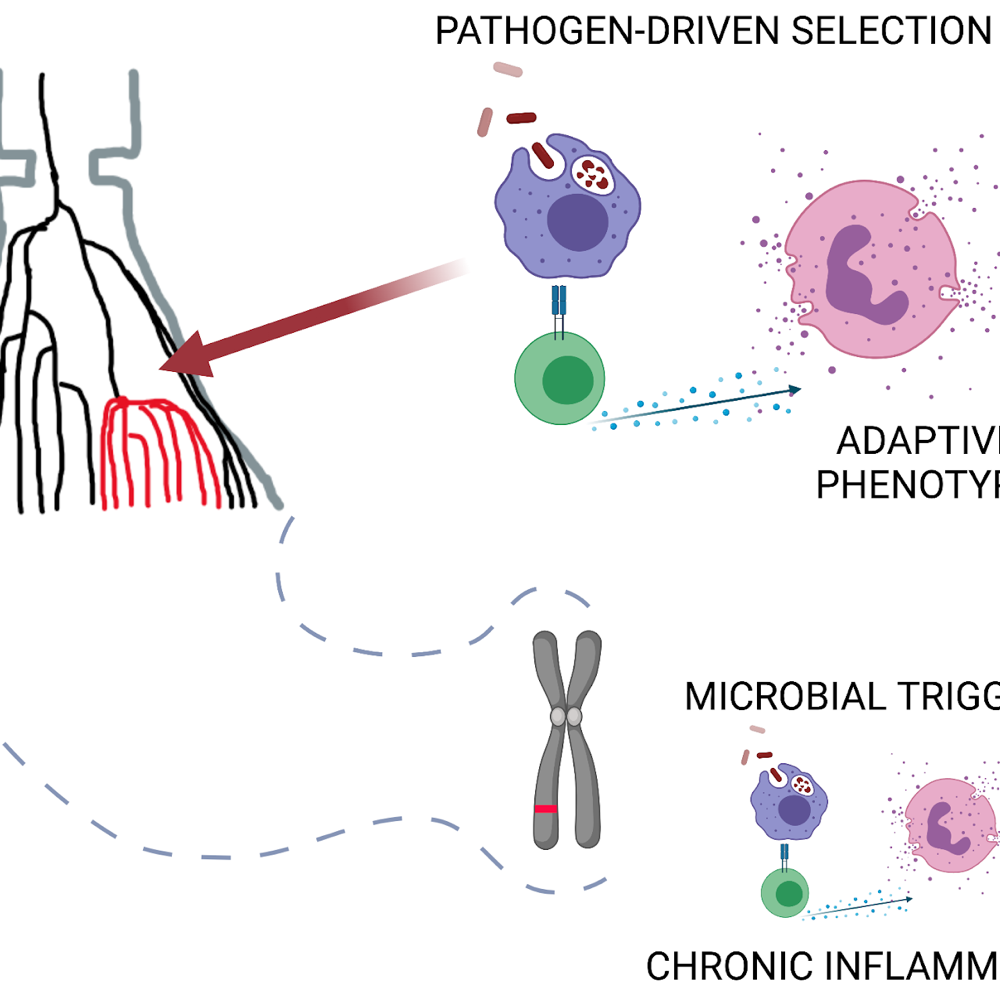
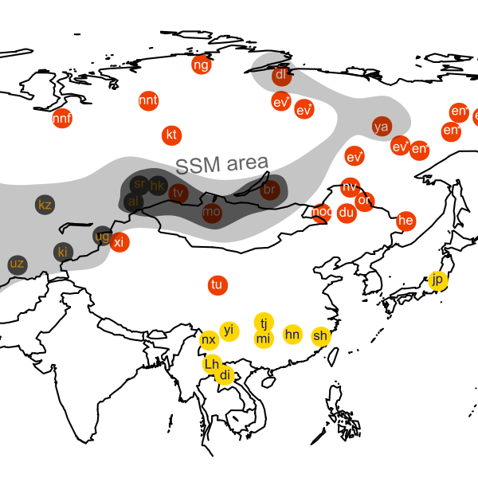
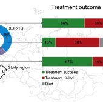

Research
How human evolutionary history shaped immune phenotypes
We combine population-genetic inference with functional work on human cells and with clinical and metagenomic data from patient cohorts. The unifying aim is to explain why immune-related disease risk is distributed the way it is across human populations.
Evolution & genetics of inflammatory conditions

Understanding how pathogen-driven selection shaped modern inflammatory conditions. Ancient and recent selection pressures on immune genes produce risk variants that persist at appreciable frequency; the question we pursue is whether those variants are still functional in the cells that matter for disease — activated T cells, monocytes and other immune compartments — and what molecular mechanism they act through.
An example from this line: variants prioritised for functional follow-up by fine-mapping mutations under natural selection, tested in activated Th1/17 cells with “memory” to antigen exposure.
- Pankratov et al., Nature Communications 2022 — prioritising autoimmunity risk variants for functional analyses by fine-mapping mutations under natural selection
- Yunusbayev et al., PLOS ONE 2026 — psoriasis risk allele function in activated Th1/17 cells
Human population genetics

Understanding neutral and adaptive evolution of modern human populations. We reconstruct demographic history from genome-wide and haplotype data, including the spread of Turkic-speaking pastoralist expansions across Eurasia, the demographic traces shared by Uralic-speaking populations, and the resolution of recent population history alongside the mapping of rare variants.
- Yunusbayev et al., PLOS Genetics — the genetic legacy of the expansion of Turkic-speaking nomads across Eurasia
- Yunusbaev et al., Scientific Reports 2019 — reconstructing recent population history while mapping rare variants using haplotypes
- Tambets, Yunusbayev et al., Genome Biology 2018 — common recent demographic history of most Uralic-speaking populations
Genetic susceptibility to tuberculosis

Focus on the host. Tuberculosis develops in a susceptible host interacting with a highly adapted mycobacterium that constantly evolves to evade treatment. We study host genetic factors and host–microbe interactions that shape susceptibility, disease progression and treatment outcome, including the effect of long-term multicomponent chemotherapy on the gut microbiome and resistome of TB patients.
- Yunusbaeva et al., Int J Infect Dis 2019 — treatment efficacy of drug-resistant tuberculosis in Bashkortostan, Russia
- Yunusbaeva et al., Front Cell Infect Microbiol 2024 — excess fermentation and lactic acidosis as detrimental functions of gut microbes in treatment-naive TB patients
How we work
| Layer | Approach |
|---|---|
| Population-genetic inference | Haplotype- and ARG-based demographic reconstruction, selection scans, local-ancestry and archaic-introgression analysis |
| Variant prioritisation | Fine-mapping of causal SNPs under natural selection, integration of chromatin accessibility, eQTL and other functional annotations |
| Functional validation | Wet-lab experiments on human cells, including activation-state and antigen-memory models |
| Clinical & microbiome | Patient cohorts (tuberculosis, psoriasis), matched-pair study designs, deep shotgun metagenomics and resistome profiling |
Student projects in any of these three areas are available at BSc, MSc and PhD level — see People for current members and Publications for the output of the group.